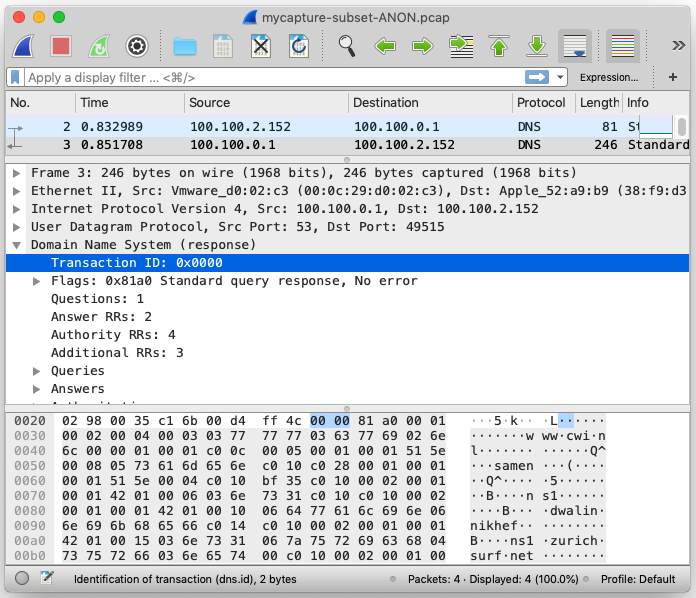

Example: Anonymizing network traffic
We have captured some network traffic and saved it as a PCAP file. This traffic includes a variety of different protocols and formats, that lie in the spectrum of the network OSI model. We have UDP, HTTP, HTML, DNS, IP, and so on and so forth.
Given this scenario, we want to anonymize the transaction identifier of each DNS header.
How would we do this using the Nescio infrastructure?
We illustrate this using the Nescio/Bird Eclipse plugin that allows us to edit Bird and Nescio files and generate the appropriate code from them. We first need to develop a Nescio module specifying the anonymization rules. Notice how we do this for the Bird language and for a previously defined TCP_IP specification in Bird.
If the file type checks, an anonymizer class is generated each time the Nescio file is saved:
This file can be executed from within eclipse. We have to specify the input data and the name of the file where we will store the anonymized data.
We can inspect both files using a network traffic editor. We can see that after running the anonymizer, a new file has been produced. In this file, the IP address belonging to each DNS packet has been indeed anonymized (in this case, by being replaced by zeroes).
|  |